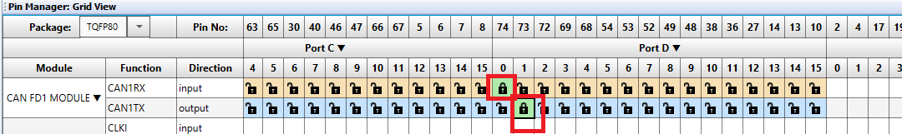

Creating the Bootloader Example Using a CAN Physical Layer on a device with a CAN-FD Capable Peripheral
Introduction
This example will show how to create a CAN Bootloader DEMO from scratch using the dsPIC33CK256MP508 processor module for the Explorer
16/32 board. While this example shows how to create the bootloader for the dsPIC33CK256MP508 processor, these steps should work for any device with the CAN-FD capable peripheral.
This demo uses the ISO 15765-2 CAN Transport Protocol layer to transport custom bootloader commands over the CAN bus
as seen in the diagram below:

Tools
Software
- Microchip MPLAB® X version 5.40 or later
- Microchip MPLAB® XC16 C compiler version 1.60 or later
- Unified Bootloader Host Application v1.16.4 or later
- Microchip MPLAB® Code Configurator version v4.0.1 or later (optional – for code configuration)
- 16-bit Bootloader MCC module version 1.18.3 or later (optional – for code configuration)
Hardware
- Explorer 16/32 Demo board
- dsPIC33CK256MP508 Processor or other Processors with the Microchip CAN-FD module
- A programmer/debugger of choice
- A Peak CAN protocol analyzer/protocol generator. A PCAN-USB FD was used for development of this demo
(https://www.peak-system.com/PCAN-USB-FD.365.0.html?&L=1).
- A CAN cable
- An MCP2542 click board (https://www.mikroe.com/mcp2542-click) or another appropriate CAN transceiver click
board.
It is important that this is just a transceiver and not a CAN-to-SPI/UART converter chip.
- A micro USB cable, a USB-Type C cable, or a 9v power adapter for the Explorer 16/32 (for powering the board).
Creating the Bootloader Project
- Open MPLAB® X and press the new project icon
- Select the Standalone Project and press Next.
- Enter the device name with the CAN-FD controller. For this example, "dsPIC33CK256MP508".
- Enter the Tool that your using and press Next.
- Select your compiler. Version 1.60 or later and press Next.
- Name your project and select the project location and press Finish.
Adding the 16-Bit Bootloader to the project
After the base project as been built, the next step is to add the bootloader and features to the project.
- Open MCC by selecting the MCC Icon and press Save when prompted to save the project
- Select the 16-Bit Bootloader:Bootloader library by pressing the green plus sign "+".
- Select "Protocol for communication" and select UART1. (This will be later removed from being compiled.)
- Change Bootloader end address to 0x5000.
- Leave Verification Scheme as Not Blank.
- Since we will need a interrupt driven timer in the bootloader, scroll down to the Interrupt Vector Table and configure T1Interrupt as "Keep In Bootloader"
- To generate the base Bootloader files for the project, press Generate as shown below
Configuring the system clocks to support 80 Mhz needed for our CAN configuration.
To allow the bootloader to support the maximum number of CAN bit-rates, we will use a 80 Mhz clock for the CAN module.
- Goto Project Resources --> System Module to view the System Clock Settings.
- Change the clock to 8000000 Primary Oscillator.
- Enable the PLL.
- Change the Feedback to 1:150.
- If Enabled, disable the Auxillary Clock.
- Change CAN Clock Generator to AFVCO/4 - 300Mhz.
- Change the Requested CAN to 20 Mhz.
- For debugging, and for this device, change the ICD to PCG3 and PGD3.
Adding CAN to the 16-Bit Bootloader project
After the base bootloader project as been generated, the next step is to add CAN module to the project. For this example, the Nominal Bit Rate will be 500Kbps and the Data Bit Rate will be 2Mbps.
- Goto Device Resources, and add CAN1 by pressing the green plus sign "+" next to it.
- Clock Freq should be 20Mhz.
- Change Nominal Bit Rate to 125 Kbps.
- Change Sample Point to 80%.
Step 3 - General Settings
- Verify that Step 3 just has Enable ISO CRC selected.
Step 4 - FIFO Settings
- Goto Step 4, and select FIFO1 from drop down box and press Add.
- Select FIFO2 from drop down box and press Add.
Step 5 - Filter Object Settings
We need to next configure the filter to only respond to messages with the ID 0xA1
- Goto Step 5, and select Filter 0 from drop down box and press Add.
- For the Receive FIFO, change to FIFO2 and Enter 0xA1 into the Message ID.

CAN GPIO Settings
After configuring the CAN Module, we need to connect it to the GPIO pins. For this part, the CAN-RX needs to be connected to GPIO D0 and the CAN-TX needs to be connected to GPIO D1. This is shown in the Pin Manager below.

Adding Timer 1 to the project
The ISO-TP stack requires the use of a timer to generate timing information for the handshakes. In this section we will add the Timer 1 to the project
- Goto Device Resources, scroll down and enable Timer 1 by pressing the green plus sign "+".
- Configure Timer 1 by setting a timer period of 1ms shown below. This will require first changing the prescaler to 1:64 and then changing the Timer Period to 1 ms.
- Enable the Timer Interrupt by checking the Timer Interrupt Enable Box.
Adding LED and Switch to Bootloader
The bootloader will use an LED to indicate that it's running and will use a switch to force entry into the bootloader. So we need to add these to the project as well.
For this board and PIM we will use LED D3 connected to GPIO RE0. The switch SW3 is connected to GPIO RB14 and is driven low when pressed.
- Open Pin Manager and configure GPIO RE0 as an output and GPIO RB14 as an input.
Generating the code.
Now press the Generate Button on Project resources shown below. This will generate the final code needed for the CAN-FD bootloader.

Removing UART from project
In building the bootloader, we added UART for the default boot communication protocol. We will now remove the UART and install the CAN as the communication device.
Remove com_adaptor_uart.c from being compiled.
- Open Projects and then right click on com_adaptor_uart.c and select "Exclude File(s) from Current project"
- Open the original can/boot.X/mcc_generated_files directory and copy the following files from this directory to the "mcc_generated_files" of the new project.
- can_tp.c
- can_tp.h
- can_tp_config.h
- can_tp_phy_adaptor.c
- can_tp_phy_adaptor.h
- Next, Open the original "can/boot.X/mcc_generated_files/boot directory" and copy the file com_adaptor_can.c in this directory to the "mcc_generated_files/boot" of the new project.
- Add the 2 new C files to this project by going to Projects, and right clicking on "MCC Generated Files" and selecting Add Existing Existing Item.
- Select the two C files just added
- Repeat the above process and add the file Add the file boot.X/mcc_generated_files/boot/com_adaptor_can.c to the project as well.
Adding code for LED D3 and switch SW3
To enable the LED D3 connected to GPIO RE0, we will open the file boot_demo.c and add the following code.
- Add #include "../pin_manager.h" at the top of the file.
- At the top of BOOT_DEMO_Tasks() add the following code to turn on the LED.
void BOOT_DEMO_Tasks(void)
{
// Turn on LED to indicate bootloader mode.
IO_RE0_SetHigh();
- Add the following line of code in EnterBootloaderMode(void) towards the bottom of file. This will return the status of the button SW3
return (IO_RB14_GetValue() == 0);
Disable Timer1 when before running the Application
Before running the application, we need to disable any units that could affect the application. One of these items is to disable Timer 1 which is generating 1ms interrupts before running the application.
- Add #include "../tmr1.h" at the top of boot_demo.c
- Add the call to the function TMR1_Stop() in BOOT_DEMO_Tasks() as shown below.

Updating main.c with CAN bootloader code
The next step is to update the file main.c with code needed to support CAN. The 4 updates to main.c are listed below.
- Add the two #include statements to include can1.h and can_tp.h
- Create the buffer named rxBuffer below and add the TMR1_Callback() function below right above main().
- Add the two CAN_TP calls at the beginning of main().
- Add the CAN_TP_Tasks() to the while(1) loop.
#include "mcc_generated_files/system.h"
#include "mcc_generated_files/boot/boot_demo.h"
#include "mcc_generated_files/can1.h"
#include "mcc_generated_files/can_tp.h"
uint8_t rxBuffer[512];
void TMR1_CallBack(void)
{
CAN_TP_Tick();
}
/*
Main application
*/
int main(void)
{
// initialize the device
SYSTEM_Initialize();
BOOT_DEMO_Initialize();
CAN_TP_Initialize();
CAN_TP_RxMessageBufferSet(rxBuffer, sizeof(rxBuffer));
while (1)
{
CAN_TP_Tasks();
// Add your application code
BOOT_DEMO_Tasks();
}
return 1;
}
Creating the Application
To create the application, we need to first create a new project for the device just like before.
- This time, lets name the project "app" using the same device as before(dsPIC33CK256MP508).
- Open MCC by pressing the MCC icon as before.
- Goto the Device resources and add the 16-bit Bootloader:Application library to the project.
- After the bootloader:Application library is loaded, the Application library will ask for the location of the bootloader project. So browse to the path of the bootloader project as shown below.
- We will use the Delay library so goto Project Resources and under Foundation Services, add the "Delay" library
Configuring the clocks to match the bootloader
We need to configure the system clocks of the application to match the bootloader. This is needed to make sure there are no differences between the bootloader and application's configuration.
- Goto Project Resources --> System Module to view the System Clock Settings.
- Change the clock to 8000000 Primary Oscillator.
- Enable the PLL.
- Change the Feedback to 1:150.
- If Enabled, disable the Auxillary Clock.
- Change CAN Clock Generator to AFVCO/4 - 300Mhz.
- Change the Requested CAN to 20 Mhz.
- For debugging, and for this device, change the ICD to PCG3 and PGD3.
Adding LED to the Application
The application will blink LED D3, connected to GPIO RE0, to indicate that it's running.
- Open Pin Manager and configure GPIO RE0 as an output
Generating the Application
Goto the Project resources and press the generate button. This should generate with no warnings.
Adding Code to the Application
Next add the code to blink the LED to the application.
- Open the Application main.c
- At the top of the file, add includes the pin_manager.h and the delay.h files.
- Create an unsigned int variable named counter.
- Add code to blink the LED every 500 milliseconds.
Downloading the Application
We have now created an Bootloader utilizing the CAN module. The user can now use the instructions in readme to further modify these prjects.
Terminology
ISO 15765-2 / CAN-TP / ISO-TP
ISO 15765-2 is a transport protocol layer designed for usage with the CAN bus. The original CAN bus specifically
allows for up to 8 bytes of data to be in a single frame. Larger messages need to be fragmented into smaller frames
for transmission on the CAN bus. ISO 15765-2 defines a protocol for fragmenting larger messages and sending them
over the CAN bus. It also incorporates flexibility in handling the data transmission through the use of flow control
packets to control the frequency of when packets arrive as well allowing to pause the transmission of a message
until the receiver is ready to receive the message.
MCC
Microchip’s MPLAB® Code Configurator tool. This tool helps configure and generate source code for peripherals and
libraries.
UBHA - Unified Bootloader Host Application
The PC application used to send the firmware update and verification commands
from the PC to the board to complete the firmware update.
Trademarks
MPLAB® is a registered trademark of Microchip Technology Inc. All other trademarks are the property of their
respective owner.